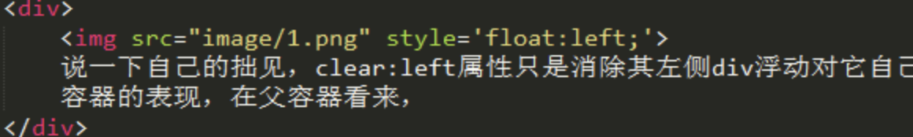

<!DOCTYPE html>
<html lang="en">
<head>
  <meta charset="UTF-8">
  <meta http-equiv="X-UA-Compatible" content="IE=edge">
  <meta name="viewport" content="width=device-width, initial-scale=1.0">
  <title>float</title>
  <link rel="stylesheet" type="text/css" href="style.css">
</head>
<body>
  <!-- float 设计的初衷是为了实现文字环绕效果  -->
  <!-- 父标签坍塌现象，因为被设置了float的元素的标签会脱离文档流 -->
<!-- <div style="border:1px solid blue;padding:3px;">
  
</div> -->

<!-- 清除float -->
<!-- 1. 为父元素添加 overflow:hidden -->
<!-- <div style="border:1px solid blue;padding:3px;overflow: hidden;">
  
</div> -->
<!-- 2. 浮动父元素 - 不推荐-->
<!-- <div style="border:1px solid blue;padding:3px;float:left;">
  
</div> -->

<!-- 3. 在浮动元素的下方添加一个clear:both的元素 -->
<!-- <div style="border:1px solid blue;padding:3px;" >
  
  <div style="clear:both"></div>
</div> -->

<!-- 4. clearfix -->
<!-- <style>
  .clearfix:after {
    content: '';
    display: block;
    clear: both;
  }
</style>
<div style="border:1px solid blue;padding:3px;" class="clearfix">
  
</div> -->

<!-- 5 position float  对行内元素都有破坏性 -->
<!-- <span style="border:1px solid red;width: 500px;height: 100px;float:left;">张盼盼</span> -->

<!-- <div style="position: fixed; width: 100px; height: 200px;border:1px solid red;margin-left:100px">
  <div style="position: absolute;left:50px">11111</div>
</div> -->


</body>
</html>